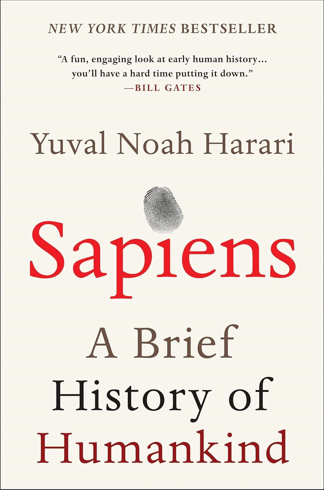
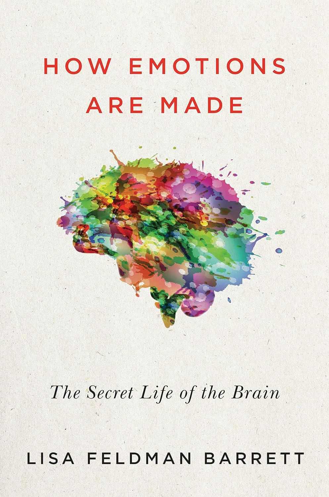
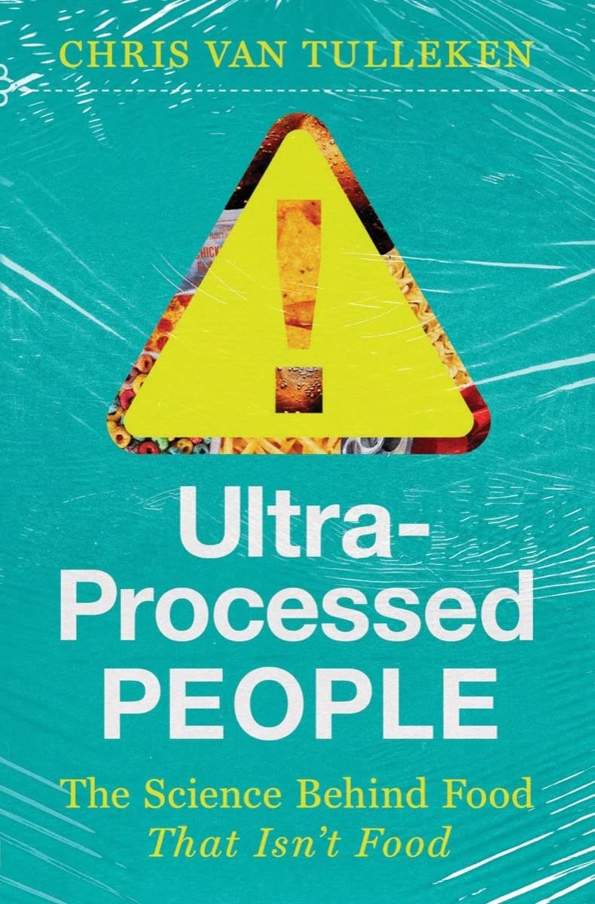
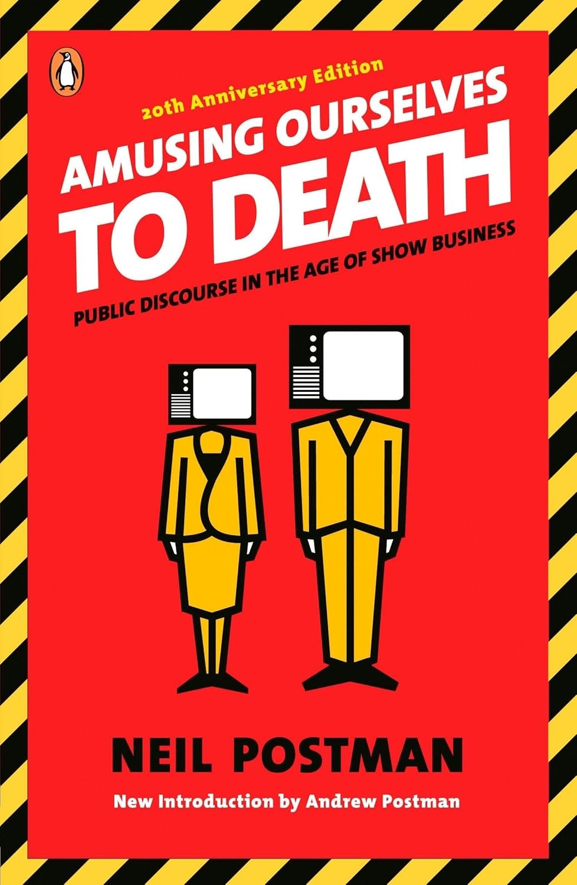
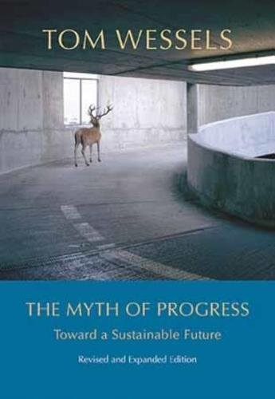

Book Recommendations
by Dr. R.O. Jácome
Five Books to Read for the 21st Century
These books together, read in the order provided, are meant to offer a "flow" for understanding ourselves and our society as a whole. It is not a ranking of worst to best. Instead, they could be thought as a sequence of past, present and future. I did my best to only use books published in this century, as it is an understanding of our current generations that many people might overlook. Everybody knows Albert Einstein, but not everybody knows the authors that I will show next.

Book 1: Sapiens: A Brief History of Humankind (2011)
by Yuval Noah Harari
Understanding our past is a necessary endeavor to move forward with the present. Not everyone has the time of the opportunity to read and investigate for every detail occurred in the history of humanity. Which is why this is an excellent book to have an starting point; a sense of how humanity has changed until our present century. This book is by no means comprehensive, as history has infinite amount of caveats and information we will never know with certainty. However, it is a wonderful start.

Book 2: How Emotions are Made: The Secret Life of the Brain (2017)
by Lisa Feldman Barrett
If understanding our past is necessary, learning what and how to move away from the past is imperative. This book is a summary of many of the studies and theories that are involved in how our brains process what we call emotions. It is a comprehensive overview of the past, the present and possible future avenues of understanding the brain. Furthermore, what drives this book to be in the list, is the constant fighting for the acceptance of new theories against previous ones in the face of evidence.
As a bonus, for a complementary example that goes well with this book, I recommend: The Fear Factor: How One Emotion Connects Altruists, Psychopaths, and Everyone In-Between by Abigail Marsh

Book 3: Ultra-Processed People: The Science Behind Food That Isn't Food (2023)
by Chris van Tulleken
What's actually on our food? Read this book.
The author offers a comprehensive analysis of what is ultra-processed food and how it is present in our lives. This is a strong book about our present situation that will be developing and shaping the future of the 21st century. The amount of learning in this book is incredible, and cannot be overstated.
If after reading this book and understanding what is the food you eat, you would probably like to understand your body better as well. For that I recommend: Immune: A Journey into the Mysterious System That Keeps You Alive by Phillip Dettmer.

Book 4: Any book by Neil Postman.
If I had to choose only one book: Amusing Ourselves to Death: Public Discourse in the Age of Show Business (1985, revised edition 2005)
This author is the only one that could not be considered from this century. However, most of his most influential books were written in the end of the 19th century. All of his books are an invitation to reflect and think of the current state of the civilization. He manages to make bold statements that became reality in our present day. One could say that he predicted some future outcomes based on the reality of his present. The way he describes his arguments is sharp and make reflect of everything that is going on today. Honestly, Amusing Ourselves to Death is known as his best works. However, I dare to recommend way more than that. All of his books are ahort and easy to read, but leave you with a lot to ponder.
So some recommendations are: Technopoly: the surrender of Culture to Technology, The Disappearance of Childhood. The End of Education: Redefining the Value of School.

Book 5: The Myth of Progress (2006, revised edition 2023)
by Tom Wessels
The last book is a culmination of all previous books together. It is by understanding our past, and our present, we can try to understand our future. This book was written by an ecologist that studies complex systems. His understanding of complex systems in the ecology arena is then used to expand to different complex systems such as societies and the planet itself. This book talks about the present, with a strong emphasis to understand the future. The book is highly inspired by a book written by Donella H. Meadows, who made prediction models for complex systems to understand what would the outcome of our planet be by the end of the century on 2100. You could say that the century just began.